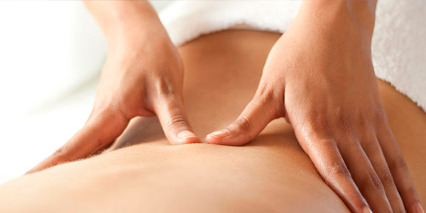

CORPORALES
MASAJE MANUAL PROFUNDO
Maniobras que posibilitan la relajación muscular para reducir el estrés, aliviar contracturas, activar la circulación y actuar sobre las terminaciones nerviosas, tanto como sedante o energizante según el caso. EL DICTADO DEL CURSO SE REALIZA VÍA ZOOM
DRENAJE LINFATICO MANUAL
Realizando este curso aprenderá la técnica completa para todo el cuerpo permitiendo eliminar líquidos y residuos metabólicos para su evacuación normal hacia el torrente venoso, siendo un procedimiento óptimo para combatir celulitis, várices, etc.
ASISTENTE EN REHABILITACION

En este curso aprendera los procedimientos, tiempos y tecnicas en la rehabilitacion muscular o post-trauma, ademas de seguir el progreso fisico aprendera sobre el acompañamiento psicologico para acompañar y estimular al paciente.
OSTEOPATIA

sta disciplina se basa en el concepto de que todos los sistemas del cuerpo están relacionados y los trastornos en un sistema afectan el funcionamiento de los otros. Fundamentos: Considera al cuerpo como un todo, donde una alteración de la estructura del órgano, músculo, hueso u otros tejidos.
MASAJE TAILANDES

El masaje tradicional tailandés, o nûat thai, forma parte de una verdadera filosofía de vida en Tailandia, y se inspira en prácticas relajantes milenarias como el yoga y la meditación. Su fundador fue Shivago Komarpaj, que, según el canon budista pâli, fue el médico de Buda hace 2500 años.
REHABILITACION DEPORTIVA

El masaje deportivo es uno de los mejores métodos para aflojar contracturas, distensiones y alivianar las molestias causadas por la actividad física. Ideal para deportistas y quienes tienen una actividad física exigente, es útil también para quienes llevan una vida sedentaria.
CURSOS ADMINISTRATIVOS
ADMINISTRACION DE CONSORCIO

Curso de administracion de consorcio Avalado y autorizado por el Gobierno de la Ciudad de Buenos Aires (Dirección de Defensa y Protección del Consumidor) Certificado Válido de Aprobación para Gestionar la Matrícula Habilitante. Credencial válida por un año.
ACTUALIZACION ANUAL DE ADMINISTRACION

Autorizado por el Gobierno de la Ciudad de Buenos Aires (Dirección de Defensa y Protección del Consumidor) para cumplir con el artículo 3° de la ley Nº 3254 que establece la exigencia de presentar un certificado para la renovación anual en el Registro Público de Administradores de Consorcios.
TERAPIAS
ACOMPAÑANTE TERAPEUTICO

Unico curso de acompañante terapeutico con certificado oficial de validez nacional. IDIP y Centro PsicoSocial Argentino Personería Jurídica: 1772728 Resolución Ministerial: 01198/06- Perteneciente al CIOBA Resolución 1204- Gobierno Ciudad de Buenos Aires.
AURICULOTERAPIA
procedimientos para realizar tratamientos en puntos energéticos del pabellón auricular (oreja) para tratar insomnio, estrés, ansiedad, obesidad, dolores musculares y óseos, y otras dolencias a través de una técnica de medicina tradicional china de larga data y probada eficiencia terapéutica.
MEDICINA TRADUCIONAL CHINA
Terapia que fundamenta el diagnostico y el tratamiento en el equilibrio de los diversos aspectos que el (Chi/Qi) adopta en el ser humano. Diagnostico (Teoría de los 5 elementos, pulsología, interrogatorio, etc.). Tratamiento (Agujas, digitopresión, moxas, fitoterapia etc.).
QUIROPRAXIA

Es una terapia manual, centrada en el concepto de alineación vertebral y movilización articular, incluyendo los denominados “ajustes”, que son simplemente métodos bien definidos y estudiados que se realizan con seguridad, para reposicionar y alinear las vértebras disfuncionales.
REFLEXOLOGIA
Técnica antigua basada en un sistema de normalización y equilibrio natural del organismo-cuerpo. Es muy utilizada como recurso ante la aparición de ciertas disfunciones. Masajeando ciertos puntos del pie que se relacionan con todo el organismo
TECNICAS HOLISTICAS
En este curso se verán Técnicas de masaje manuales combinadas con la mirada Holística, sirviendo la misma, para complementar otras terapias alternativas, como por ej Reiki, Masajes descontracturante y relajante, drenaje etc.
CURSOS CON CERTIFICACION OFICIAL
ESTIMULACION TEMPRANA

El curso de ESTIMULACIÓN TEMPRANA forma profesionales que cuentan con herramientas para poder acompañar el desarrollo y evolución del paciente, implementando distintas técnicas que favorezcan el proceso de recuperación de acuerdo a las características de cada caso.
ADMINISTRACION DE CONSORCIO
Curso de administracion de consorcio Avalado y autorizado por el Gobierno de la Ciudad de Buenos Aires (Dirección de Defensa y Protección del Consumidor) Certificado Válido de Aprobación para Gestionar la Matrícula Habilitante. Credencial válida por un año.
ACTUALIZACION ANUAL PARA ADMINISTRADORES
Autorizado por el Gobierno de la Ciudad de Buenos Aires (Dirección de Defensa y Protección del Consumidor) para cumplir con el artículo 3° de la ley Nº 3254 que establece la exigencia de presentar un certificado para la renovación anual en el Registro Público de Administradores de Consorcios.
ACOMPAÑANTE TERAPEUTICO
Unico curso de acompañante terapeutico con certificado oficial de validez nacional. IDIP y Centro PsicoSocial Argentino Personería Jurídica: 1772728 Resolución Ministerial: 01198/06- Perteneciente al CIOBA Resolución 1204- Gobierno Ciudad de Buenos Aires.